Right now a good idea at JU depends on which professor you happen to know, which WhatsApp group you're in, or whether E-Cell's latest post reached you in time. INNO gives every student, mentor, and investor one shared place to find each other, so ideas stop stalling for lack of the right introduction.
INNO is Jadavpur University's shared platform for student innovation. It brings ideas, mentors, faculty reviewers, and investors onto one page, replacing the scattered mix of WhatsApp groups and word of mouth that used to decide which projects got noticed.
It is built on top of work that campus institutions were already doing, and it exists to make that work visible and easy to reach for every student, not just the ones already plugged in.
Two campus institutions did the groundwork long before INNO existed.
The Institution's Innovation Council brings faculty mentorship and structured review to student projects, formally linking campus ideas to the university's innovation goals.

E-Cell has spent years running workshops and pitch events for student founders, giving early ventures their first audience on campus.
Three stages, so nothing sits waiting without an owner.
A student outlines the problem, the current attempt, and what kind of help they're looking for.
An IIC-affiliated reviewer picks it up, gives feedback, and decides whether it's ready for the next stage.
Reviewed ideas become visible to investors and donors browsing the directory for what to back next.
Startups, funding calls, and open roles, updated as reviewers verify them.
Real photographs from JU, IIC, and E-Cell events. Placeholder frames below, real photos to be dropped in from the shared Drive folder.